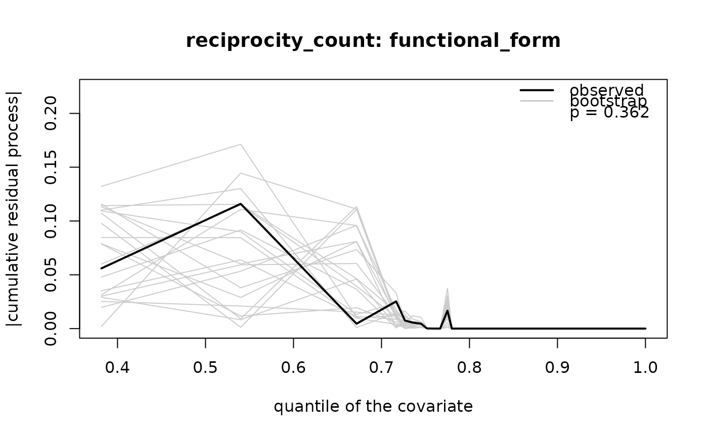

Cumulative martingale-residual tests for a model fitted with
rem(method = "gam"), following Boschi & Wit (2025). The test works on the
fit itself, so it covers linear and smooth (nl, tv, tvnl) terms and the
penalised estimates rem() returns. The null distribution comes from a
multiplier bootstrap that subtracts the drift due to estimating the
coefficients, rather than from the asymptotic Brownian bridge used by
gof_univariate() and its siblings, which refit a linear model from the
event log.
Usage
gof_rem(
fit,
term,
test = c("time", "functional_form", "functional_form_score"),
data = NULL,
time = NULL,
n_sim = 2000,
max_grid = 500,
seed = NULL
)Arguments
- fit
A
remobject fitted withmethod = "gam".- term
Name of the covariate to test, as written in the
rem()formula (e.g."x"forx,nl(x)ortv(x)).- test
Which process to test; see Tests.
- data
The wide data the model was fitted on. Needed for linear terms (to read
<term>_ev/<term>_nv) and fortest = "time"(to read the event times);nl()terms carry their event and control values in the fit.- time
Name of the event-time column in
data; defaults to thetimeargument of therem()call. A column<time>_evis used when<time>is absent.- n_sim
Number of bootstrap replicates.
- max_grid
Maximum number of grid points of the process.
- seed
Optional seed for the bootstrap multipliers; the caller's random number state is restored afterwards.
Value
An object of class "rem_gof": a list with p_value, statistic,
the bootstrap suprema statistic_sim, the observed process process, the
bootstrap processes process_sim (grid points x replicates), the grid
(x, and u on the quantile scale), test and term. It has print()
and plot() methods; plot(x, n_show = 20, main = NULL, legend = "topright") draws the observed process against n_show bootstrap
processes, with the legend at a graphics::legend() position or none
(legend = NULL).
Tests
"time"The residual process of
term's columns, cumulated over event time. Detects an effect that changes over time when the model holds it constant."functional_form"The residual process cumulated over the empirical quantiles of the covariate, pooling event and control values: at each quantile \(u\) the increment is \(I(x_{ev} \le x_{(u)}) - I(x_{nv} \le x_{(u)})\). Detects a wrong shape of the covariate effect, e.g. a linear term fitted to a non-linear effect.
"functional_form_score"As
"functional_form", with each indicator weighted by the term's basis evaluated at the event and at the control. Supported for linear andnl()terms.
The statistic is the supremum over the grid of the absolute process
("functional_form") or of its Euclidean norm across the term's columns
(the other two tests); the p-value is the share of bootstrap replicates
whose supremum is at least as large.
References
Boschi M, Wit EC (2025). Goodness-of-fit tests for relational event models based on cumulative martingale residuals. Statistics and Computing 36, 4. doi:10.1007/s11222-025-10751-2 .
Examples
set.seed(1)
w <- simulate_relational_events(
n_events = 300, senders = paste0("a", 1:12), receivers = paste0("a", 1:12),
n_controls = 1, endogenous_stats = "reciprocity_count",
endogenous_effects = c(reciprocity_count = 0.6), wide = TRUE)
fit <- rem(~ reciprocity_count, data = w, method = "gam", time = "time")
g <- gof_rem(fit, "reciprocity_count", test = "functional_form", data = w,
n_sim = 500, seed = 1)
g
#> Martingale-residual GoF test of 'reciprocity_count': functional form
#> sup statistic = 0.1160, p-value = 0.3620 (500 bootstrap replicates, n = 300)
plot(g)
